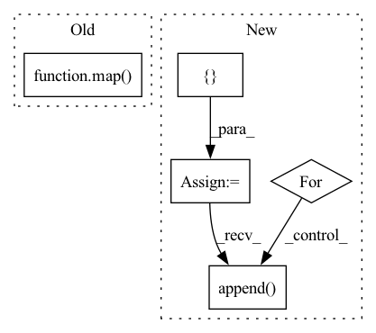

Pattern ID :22458
Before Change
// Need cv2.DMatches
valid = matches > -1
zipped = zip(valid, matches[valid]) // zipped indices for img and map kps
matches = np.array(map( _make_match, zipped) )
if logger is not None:
logger.debug("zipped=\n{},\nmatches=\n{}.".format(zipped, matches)) // TODO: remove this
After Change
h, w = img.shape
// Make a list of matches
matches = []
for i in range(0, len(kp_img)):
matches.append( cv2.DMatch(i, i, 0)) // TODO: implement better, e.g. use _make_match helper
matches = np.array(matches)
// Need cv2.KeyPoints for kps (assumed to be numpy arrays)In pattern: SUPERPATTERN
Frequency: 4
Non-data size: 5
Instances Fragment ID: 71023423
Project Name: hmakelin/gisnav
Commit Name: 285469b7fb52791ba46a92841b36bbb5543b2212
Time: 2021-10-07
Author: hmakelin@protonmail.com
File Name: wms_map_matching/util.py
M Class Name: AnonimousClass
N Class Name: AnonimousClass
M Method Name: visualize_homography(8)
N Method Name: visualize_homography(8)
M Parent Class:
N Parent Class:
M File Name: wms_map_matching/util.py
N File Name: wms_map_matching/util.py
M Start Line: 105
M End Line: 118
N Start Line: 102
N End Line: 132
Before Change
for index, vocab in list(zip(range(0, len(self.vocab)), self.vocab)):
self.vocab_dict[vocab] = index
self.index_dd = np.array(list(map( lambda y: np.array(list(map(lambda x:
self.vocab_dict[x], y.split()))), data) ))
self.idx2token = {v: k for (k, v) in self.vocab_dict.items()}
self.bow = get_bag_of_words(self.index_dd, len(self.vocab))
After Change
def prepare(self):
indptr = [0]
indices = []
data = []
vocabulary = {}
with open(self.file_name, "r") as filino:
docs = filino.readlines()
for d in docs:
for term in d.split():
index = vocabulary.setdefault(term, len(vocabulary))
indices.append(index)
data.append( 1)
indptr.append(len(indices))
self.vocab_dict = vocabulary
self.vocab = list(vocabulary.keys()) Fragment ID: 71023422
Project Name: milanlproc/contextualized-topic-models
Commit Name: 06e8fbee8e3be72841f4aac15b1f43bd6821ffee
Time: 2020-07-30
Author: s.terragni4@campus.unimib.it
File Name: contextualized_topic_models/utils/data_preparation.py
M Class Name: TextHandler
N Class Name: TextHandler
M Method Name: prepare(1)
N Method Name: prepare(1)
M Parent Class:
N Parent Class:
M File Name: contextualized_topic_models/utils/data_preparation.py
N File Name: contextualized_topic_models/utils/data_preparation.py
M Start Line: 48
M End Line: 64
N Start Line: 51
N End Line: 68
Before Change
def shift_tokens(x, amt):
*x, x_pass = x.chunk(amt + 1, dim = -1)
x = tuple(map( lambda args: shift(*args), zip(x, range(0, amt + 1))) )
return torch.cat((*x, x_pass), dim = -1)
// helper classesAfter Change
amts = 2 ** torch.arange(amt)
amts = amts.tolist()
shifts = []
denom = torch.arange(n, device = device)
for x_chunk, x_cumsum_chunk, amt in zip(x, x_cumsum, amts):
shifted_chunk = shift(x_cumsum_chunk, amt, dim = -2) - shift(x_cumsum_chunk, 2 * amt, dim = -2)
shifted_denom = shift(denom, amt, dim = -1) - shift(denom, 2 * amt, dim = -1)
shifted_denom = rearrange(shifted_denom, "n -> () n ()")
normed_shifted_x = shifted_chunk / (shifted_denom + eps)
shifts.append( normed_shifted_x)
return torch.cat((*shifts, x_pass), dim = -1)
// helper classes Fragment ID: 71023426
Project Name: lucidrains/token-shift-gpt
Commit Name: ee7f1bcc4e0dae69d1cccb5154cbff1020571b9c
Time: 2021-08-17
Author: lucidrains@gmail.com
File Name: token_shift_gpt/token_shift_gpt.py
M Class Name: AnonimousClass
N Class Name: AnonimousClass
M Method Name: shift_tokens(3)
N Method Name: shift_tokens(2)
M Parent Class:
N Parent Class:
M File Name: token_shift_gpt/token_shift_gpt.py
N File Name: token_shift_gpt/token_shift_gpt.py
M Start Line: 17
M End Line: 18
N Start Line: 16
N End Line: 36
Before Change
ids = np.concatenate(list(
ds.map(lambda example: example["example_id"]).batch(
batch_size).as_numpy_iterator())).tolist()
ids = list(map( lambda x: x.decode("UTF-8"), ids) )
subgroup_labels = list(
ds.map(lambda example: example["subgroup_label"]).batch(
batch_size).as_numpy_iterator())After Change
num_subgroups: int,
) -> pd.DataFrame:
Evaluates model for subgroup representation vs number of rounds.
round_idx = []
subgroup_ids = []
num_samples = []
prob_representation = []
for idx in range(num_rounds):
ds = dataloader.train_ds
bias_table = pd.read_csv(
os.path.join(
os.path.join(output_dir, f"round_{idx}"), "bias_table.csv"))
predictions_merge = merge_subgroup_labels(ds, bias_table, batch_size)
for subgroup_id in range(num_subgroups):
prob_i = (predictions_merge["subgroup_label"]
== subgroup_id).sum() / len(predictions_merge)
round_idx.append( idx)
subgroup_ids.append(subgroup_id)
num_samples.append(len(predictions_merge))
prob_representation.append(prob_i)
return pd.DataFrame({ Fragment ID: 71023425
Project Name: google/uncertainty-baselines
Commit Name: f5b53459d654b40668528e806a24776b53864278
Time: 2022-11-03
Author: no-reply@google.com
File Name: experimental/shoshin/evaluate_model_lib.py
M Class Name: AnonimousClass
N Class Name: AnonimousClass
M Method Name: evaluate_active_sampling(5)
N Method Name: evaluate_active_sampling(4)
M Parent Class:
N Parent Class:
M File Name: experimental/shoshin/evaluate_model_lib.py
N File Name: experimental/shoshin/evaluate_model_lib.py
M Start Line: 34
M End Line: 59
N Start Line: 68
N End Line: 92